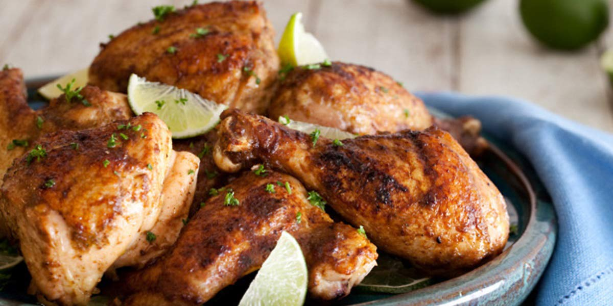

Jerk Chicken
Recipe Specification
Ingredients List
| Ingredients | Quantity |
|---|---|
| Free-range Chicken | 1x2kg |
| Spring Onions | 6 stalks |
| Root Ginger | 2 inches |
| Garlic Cloves | 3 Cloves |
| Red Onion | 1x1 |
| Scotch Bonnet Chillies | 2x1 |
| Dried Thyme | ½ tsp |
| Lime Juice | 25ml |
| Dark Soy Sauce | 30ml |
| Vegetable Oil | 50ml |
| Dark Brown Sugar | 45g |
| Ground Allspice | 15g |
Yield: 4-6 portions
Preparation
- Fillet the breasts and legs from the chicken carcass before discarding carcass.
- Keep skin on chicken as this will crisp up later in the oven.
- Peel garlic cloves.
- Grate ginger.
- Peel and roughly chop red onion.
- Place spring onions, ginger, garlic cloves, red onion, scotch bonnet chillies, dried thyme, lime juice, soy sauce, vegetable oil, brown sugar and allspice in a food processor before blending smooth.
- Score semi cuts into the chicken pieces before placing in jerk marinade, massaging and cling filming ready for the refrigerator. It better to marinade the chicken for 24 hours as the meat is more flavourful.
- After 24 hours, remove chicken from refrigerator, shake off any excess marinade and place skin side up on deep baking dish. Allow meat to come to room temperature before placing in the oven as this results in an even cook.
- Pre-heat oven to 180’C.
Cooking Instructions
- Place chicken in the oven for 15 minutes before turning up the heat to 200’C and cooking for 10 minutes. This ensures that the skin is crispy whilst the meat is soft and tender.

Serving Suggestions
Jerk chicken goes great with rice and peas, festival dumplings and braised cabbage.
Storing instructions
Cool to room temperature and place in an airtight container before placing in the refrigerator. Consume within 4 days of making it.
Reheating Instructions
Pre-heat oven to 160’C and warm for 10 minutes. Alternatively, place in the microwave and heat foe 3-4 minutes.